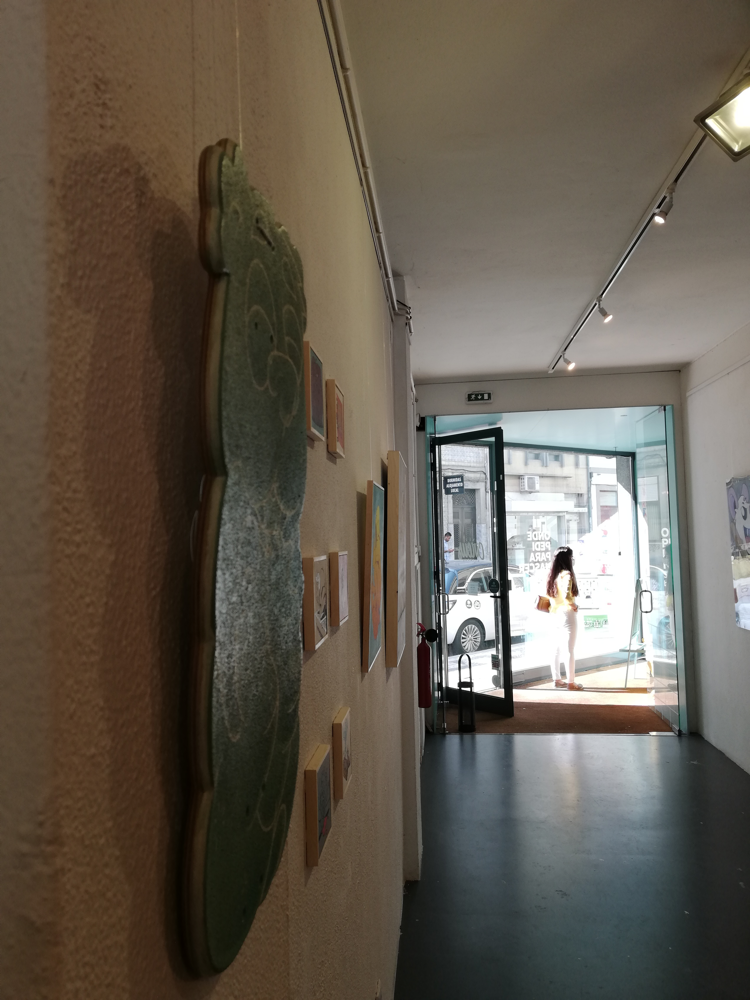
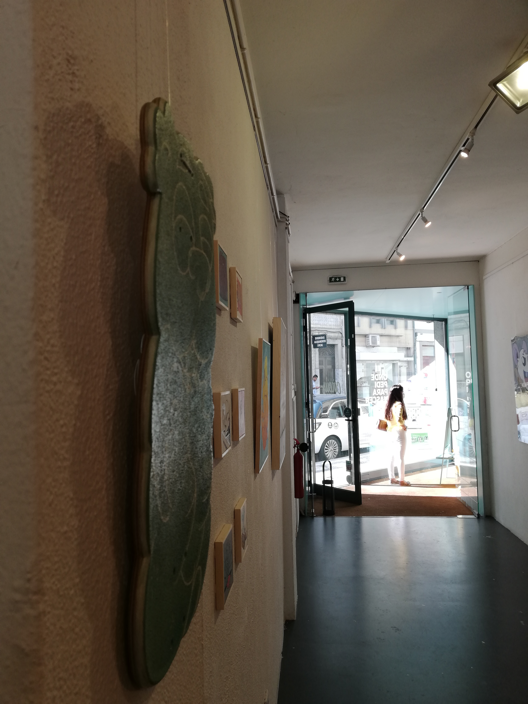

Graffiti
História
Devido ao aparecimento cada vez mais espontâneo de autênticas
pinturas que mascaram os edifícios portuenses, verdadeiras obras
de arte contemporânea, o povo, na maioria das vezes associa essas pinturas a graffitis.
Na verdade não estamos errados, o graffiti deu origem à arte urbana.
Nos anos 60, em Filadéfia, iniciaram-se os primeiros
passos do graffiti através do dito World's first Writer - Cornbread.
Este movimento atingiu a juventude portuguesa nos inícios dos anos 90
Inicialmente quem pintava paredes tinha o nome de Writer.
Grande parte das vezes, estes, eram considerados vândalos
por pintarem em paredes
conteúdos
pouco conciencializadores, desvirtuando a arte do graffiti.
Na verdade podemos assumir que o graffiti
é um estilo mais cru, proveniente das ruas, dito underground
cujas linhas são mais agressivas.
fig. Tese de Doutoramento de Vanda - 2015
No graffiti existem três tipos de abordagens:
| Tipo | Nº de Cores | Conceção |
|---|---|---|
| Tag | 1 cor | Linha única/Outline(normalmente nome do Artista) |
| Throw Up ou Throwie | 2 cores | Background e Outline |
| Piece | mais de 3 cores | Ilustrações, Retratos |
 
